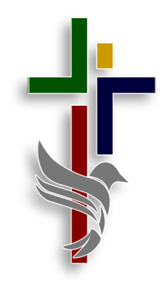

FE FIRME. HERMANDAD. PROPÓSITO.
Sociedad de Varones
Ben Elohim.
Hijos del Dios Fuerte Siervos del Dios Altísimo
Una comunidad de hombres comprometidos en fortalecer su vida espiritual, formar líderes piadosos para el hogar y la Iglesia, y vivir una fe viva que impacte todas las áreas de la vida cristiana.
Iglesia Nacional Presbiteriana “Príncipe de Paz”
Comalcalco, Tabasco
“Velad, estad firmes en la fe; portaos varonilmente, y esforzaos.”
01 / NUESTRA HISTORIA
Hombres de fe.
Hermanos en el camino.
¿Quiénes somos?
Fundados en enero de 2019 bajo la iniciativa de nuestro pastor, el Pbro. Melvin Cruz Córdova, “Ben Elohim” nace con el firme propósito de reunir a los varones de la congregación de manera constante en el estudio de la Palabra de Dios y en la oración.
Hoy somos un grupo consolidado de aproximadamente 35 miembros activos que nos reunimos para caminar juntos en la fe, exhortarnos mutuamente y perseverar en el discipulado cristiano mediante mesas redondas y de discusión bíblica participativa.
Nuestra misión
Formar hombres con carácter piadoso, integridad y liderazgo en el hogar, la iglesia y la sociedad.
Nuestra dinámica
Charlas semanales de edificación y un programa de devocionales diarios a las 5:00 a.m. a través de WhatsApp, que incluye lectura bíblica, oración y retos prácticos diarios.
02 / CRECIMIENTO Y FORMACIÓN
Una fe que crece.
Una vida que se transforma.
Creemos firmemente que la madurez espiritual se fundamenta en la sana doctrina. A lo largo de los años hemos profundizado en nuestra fe estudiando obras clave.
Doce Hombres Comunes y Corrientes
John MacArthur
Enseñanzas que Transformaron el Mundo
Miguel Núñez
Un Hombre Conforme al Corazón de Dios
Jim George
- ESTUDIO ACTUAL · 2026
Descubriendo el Glorioso Evangelio
Paul Washer
03 / LIDERAZGO ACTUAL · 2026
Llamados a servir.
Dispuestos a guiar.
- Presidente
- Lázaro Flores Rodríguez
- Secretario
- A.I. Jael Castellanos Morales
- Tesorero
- Hno. Humberto Gallegos Hernández
- Consejero
- A.I. Geremías Méndez Hernández
- Asesor
- Pbro. Melvin Cruz Córdova
04 / CONECTA CON NOSOTROS
Hay un lugar
para ti, hermano.
¿Te gustaría formar parte de la Sociedad de Varones “Ben Elohim” y crecer junto a otros hermanos en la fe?
Contáctanos para conocer los horarios actuales de nuestras reuniones presenciales y ser parte de nuestro grupo de estudio y devocionales.
ENCUÉNTRANOS EN
INP “Príncipe de Paz”Calle Sánchez Magallanes No. 505,
Comalcalco, Tabasco.Ver ubicación en el mapa
Después de siete años, no hemos terminado nuestra misión; estamos en el camino que Dios nos trazó, por eso, con humildad, gratitud y determinación, seguimos adelante para el servicio del Señor y de su Iglesia.